Tip, roll and tumble
Lesson 2 turned the cube around one skewer, the upright y axis. Today we add the other two skewers: tipping around x and rolling around z. The surprise is that both use Lesson 2's rule with the letters swapped, so there is no new maths. At the end all three run together and the cube tumbles through the air.
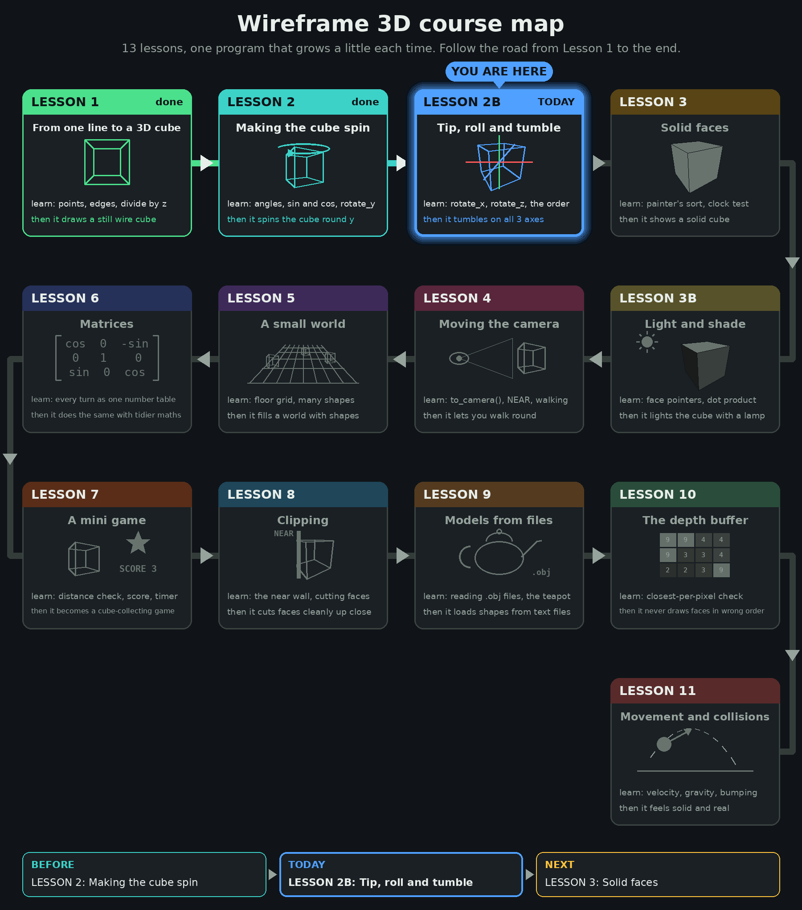
Before: Lesson 2 spun the cube around y.
Today: tip around x and roll around z, then all three turns together.
Next: Lesson 3, Solid faces fills the wire cube in with colour.
This lesson finishes the turning part of the course. Today's rotate_x() comes back in Lesson 4 for looking up and down, and Lesson 6 packs all three turns into one table of numbers.
Lesson plan
Who it's for: someone who finished Lesson 2 and can run step3_spin_cube.py. You need cos, sin, math.radians() and the rotation rule from Lesson 2. Needs: Python 3 and pip install pygame-ce, as before.
By the end, the learner can:
- Name the three turns (tip, turn, roll), their skewers (x, y, z) and which letters each one changes.
- Say any turn as "which letter swings toward which", and write its rule from memory.
- Tip and roll corner 5 by hand, bracket by bracket, and follow it to the screen.
- Chain three turns, each starting from the answer of the one before.
- Explain, with a picture, why the order of the turns changes the result.
Table 2B.0.2Lesson plan: time, part and what happens
| Time | Part | What happens |
|---|---|---|
| 0–5 | Recap | Three skewers through the cube. Lesson 2's rule said a new way: "+x swings toward +z". Q1. |
| 5–21 | 1. Tip around x | The side view, two easy cases, the tip rule, corner 5 by hand at 90° and 30°, all 8 corners. Run step1_tip_cube.py. Q2–Q6. |
| 21–33 | 2. Roll around z | The front view, two easy cases, the roll rule, corner 5 at 90° and 30°, and why it rides a circle on screen. Run step2_roll_cube.py. Q7–Q10. |
| 33–43 | 3. All three | The three rules side by side, why order matters, corner 5 through a chain of three turns, three speeds. Run step3_tumble_cube.py. Q11–Q14. |
| 43–45 | Wrap up | The ideas from today. Final check Q15. Preview of Lesson 3. |
Recap: three skewers 5 MIN
In Lesson 2 we pushed a skewer straight down through the middle of the cube (the y axis) and twirled it. A cube has room for two more skewers through its centre: one going left to right (the x axis) and one pointing straight at you (the z axis). Each skewer gives a different way to turn.
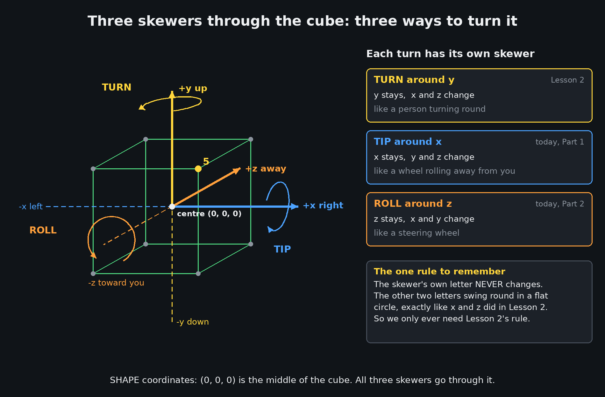
The key fact from Lesson 2 still holds for every skewer: the skewer's own letter never changes, and the other two letters swing round in a flat circle.
To use Lesson 2's rule for the new skewers, we need a way of describing a turn that doesn't depend on "clockwise" or "from above". Here it is: say which letter swings toward which.
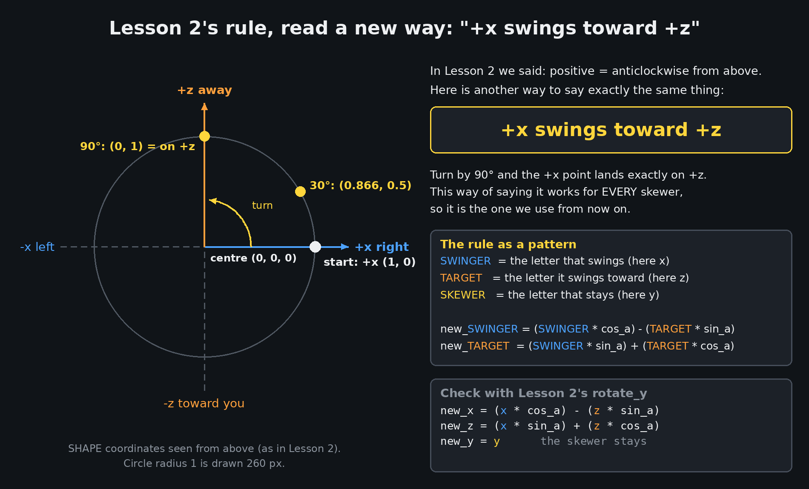
new_SWINGER = (SWINGER * cos_a) - (TARGET * sin_a)new_TARGET = (SWINGER * sin_a) + (TARGET * cos_a)
The skewer letter is copied unchanged. Put x in for SWINGER and z in for TARGET and you get Lesson 2's rotate_y exactly.
Q1For Lesson 2's turn, which letter is the skewer, which is the swinger and which is the target?
Show answer
Part 1: Tipping around x 16 MIN
Now push the skewer through the cube from left to right, along the x axis. When the cube turns on it, it tips over like a wheel rolling away from you.
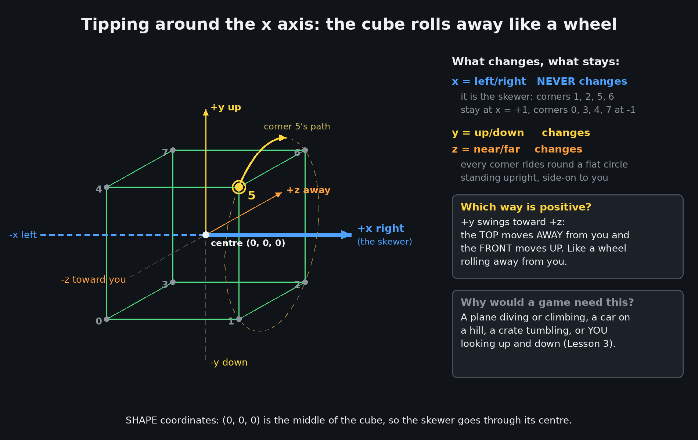
For tipping, +y swings toward +z: the top moves away from you and the front moves up. So y is the swinger, z is the target and x is the skewer.
1.1 Looking from the side
In Lesson 2 we looked down from above, because y didn't change. Now x doesn't change, so we look along the x axis instead: walk round to the cube's left side and look at it side-on.
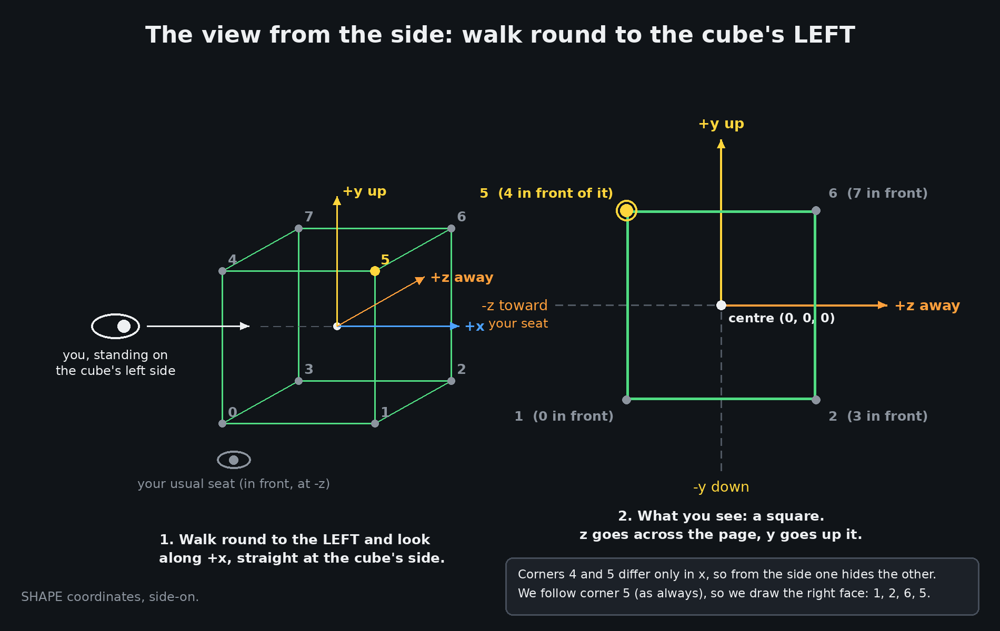
+z (away) is to the right and +y (up) is up the page. Your usual seat, in front of the screen, is off to the left at -z. All of these are SHAPE coordinates, so the centre of the cube is (0, 0, 0).
1.2 The two easy cases
Exactly as in Lesson 2, we turn two simple points first: one on the swinger axis (+y, the top) and one on the target axis (+z, the back).
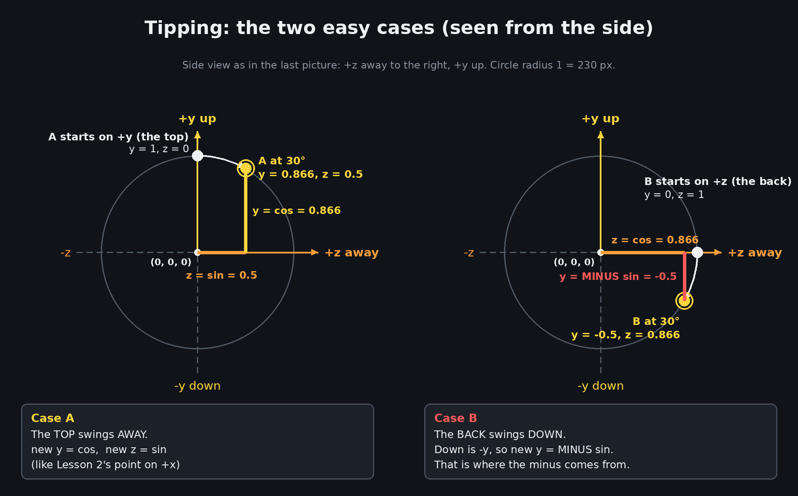
In this side picture (Fig 2B.1.3) the tip looks clockwise. That is only because we are standing on the cube's left side; from the right side it would look anticlockwise. The words that never mislead are "+y swings toward +z".
1.3 The tip rule
Adding the two cases together, as we did in Lesson 2, gives the tip rule. It is Lesson 2's rule with every x swapped for a y.
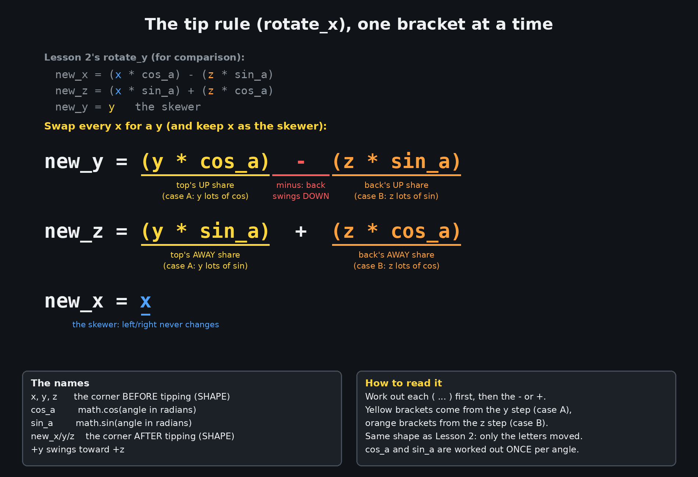
def rotate_x(point_3d, angle_degrees):
x, y, z = point_3d
# Python's sin and cos need RADIANS, so convert first (as Lesson 2).
angle_radians = math.radians(angle_degrees)
cos_a = math.cos(angle_radians)
sin_a = math.sin(angle_radians)
new_x = x # the skewer: left/right never changes
new_y = (y * cos_a) - (z * sin_a)
new_z = (y * sin_a) + (z * cos_a)
return (new_x, new_y, new_z)1.4 Worked example 1: corner 5, a quarter tip
As in Lesson 2 we start with 90°, because cos and sin are just 0 and 1 and the answer is easy to check against the picture (Fig 2B.1.5).
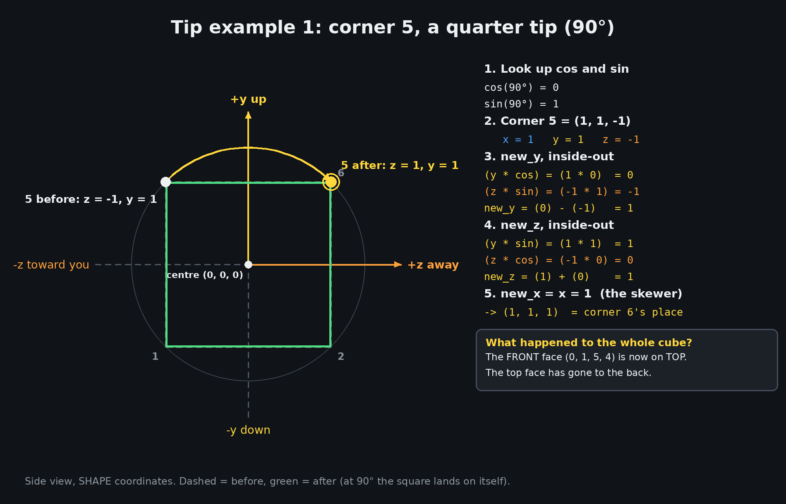
1.5 Worked example 2: corner 5, tipped 30°
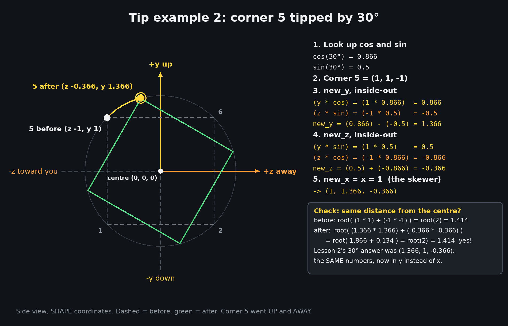
1.6 To the screen
Nothing after the turn has changed since Lesson 2: add cube_distance to z, then project().
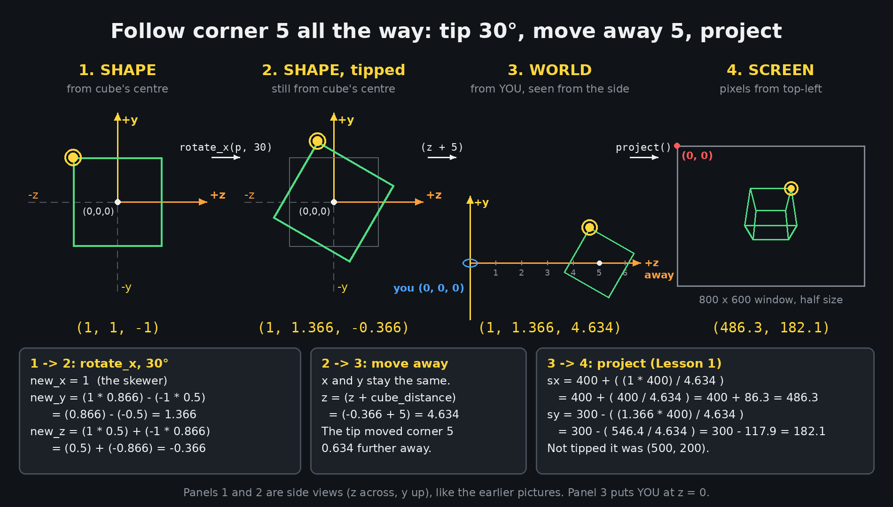
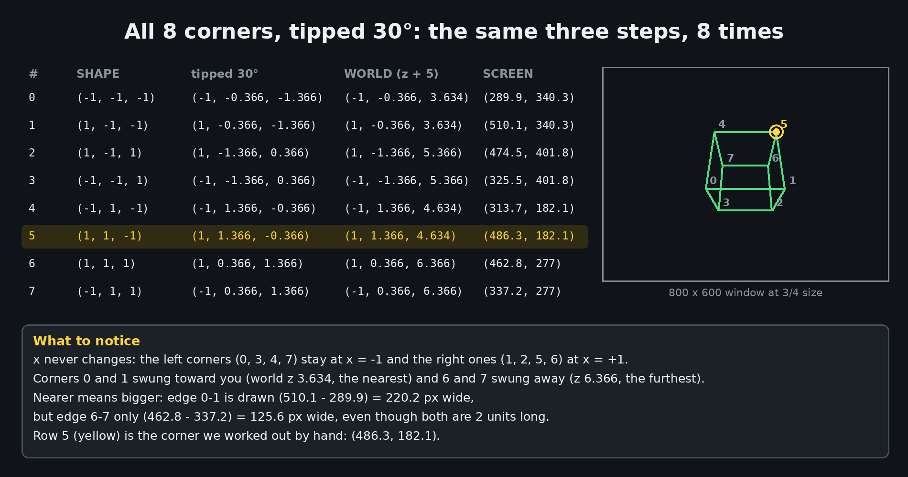
Run step1_tip_cube.py. Hold UP to tip the cube and DOWN to tip it back. The map in the corner shows the same tip from the side, like the diagrams, with corner 5 in yellow. Distance is fixed at 5 in this lesson, because the arrow keys are now needed for turning.
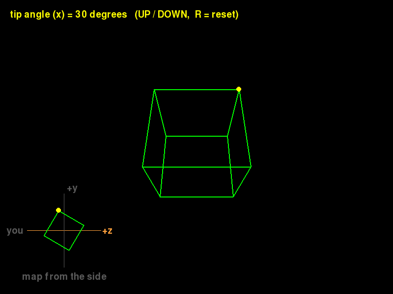
Full code: step1_tip_cube.py (about 220 lines)
# ======================================================================
# LESSON 2B - STEP 1: TIP THE CUBE (turning around the x axis)
# ----------------------------------------------------------------------
# Goal: the cube from Lesson 2, but now the UP / DOWN arrows TIP it
# around its x axis (the left-right line through its middle), like a
# wheel rolling away from you.
#
# What is new since Lesson 2 (everything else is the same):
#
# 1. angle_x_degrees - how far the cube has tipped
# 2. rotate_x(point, angle) - tips ONE point around the x axis
# 3. a small "map from the side" in the bottom-left corner, so you
# can see the tip from the side, like the lesson diagrams.
#
# THE BIG IDEA:
# rotate_x is Lesson 2's rotate_y with different letters.
#
# Lesson 2, rotate_y: +x swings toward +z. y is the skewer.
# Today, rotate_x: +y swings toward +z. x is the skewer.
#
# So every "x" in the old rule becomes a "y", and x is left alone.
#
# THE ORDER IS STILL:
# rotate (SHAPE coordinates) -> move away (WORLD) -> project (SCREEN)
#
# Controls: UP / DOWN = tip the cube, R = reset the angle to 0
# Run: python step1_tip_cube.py
# ======================================================================
import math
import pygame
pygame.init()
WIDTH = 800
HEIGHT = 600
screen = pygame.display.set_mode((WIDTH, HEIGHT))
pygame.display.set_caption("Lesson 2B, step 1 - tip the cube")
clock = pygame.time.Clock()
font = pygame.font.SysFont(None, 28)
BLACK = (0, 0, 0)
GREEN = (0, 255, 0)
YELLOW = (255, 255, 0)
GREY = (90, 90, 90)
ORANGE = (255, 160, 60) # z is always orange, as in Lesson 2
CENTRE_X = (WIDTH / 2) # (800 / 2) = 400
CENTRE_Y = (HEIGHT / 2) # (600 / 2) = 300
FOCAL = 400 # the lens zoom from Lesson 1
# ---- The cube, in SHAPE coordinates (same as Lessons 1 and 2) --------
cube_points = [
(-1, -1, -1), # 0 bottom-left-front
( 1, -1, -1), # 1 bottom-right-front
( 1, -1, 1), # 2 bottom-right-back
(-1, -1, 1), # 3 bottom-left-back
(-1, 1, -1), # 4 top-left-front
( 1, 1, -1), # 5 top-right-front
( 1, 1, 1), # 6 top-right-back
(-1, 1, 1), # 7 top-left-back
]
cube_edges = [
(0, 1), (1, 2), (2, 3), (3, 0), # bottom square
(4, 5), (5, 6), (6, 7), (7, 4), # top square
(0, 4), (1, 5), (2, 6), (3, 7), # upright edges
]
# The cube stays 5 units away all lesson. (In Lesson 2 UP / DOWN moved
# it nearer and further; today UP / DOWN are needed for tipping.)
cube_distance = 5
# ---- NEW: how far the cube has tipped --------------------------------
# Still in DEGREES: 0 = facing you as in Lesson 1, 90 = quarter tip.
angle_x_degrees = 0
# 1 degree per frame of holding a key, 60 frames a second
# -> (1 * 60) = 60 degrees a second -> (360 / 60) = 6 s for a full tip.
TURN_STEP = 1
def rotate_x(point_3d, angle_degrees):
"""Tip one (x, y, z) point around the x axis.
The point must be in SHAPE coordinates (from the shape's own centre).
A positive angle swings +y (the top) toward +z (away from you):
the cube tips its top away from you, like a wheel rolling away.
"""
x, y, z = point_3d
# Python's sin and cos need RADIANS, so convert first (as Lesson 2).
angle_radians = math.radians(angle_degrees)
cos_a = math.cos(angle_radians)
sin_a = math.sin(angle_radians)
# Lesson 2's rule, with every x swapped for a y:
# rotate_y had new_x = (x * cos_a) - (z * sin_a)
# new_z = (x * sin_a) + (z * cos_a)
new_x = x # the skewer: left/right never changes
new_y = (y * cos_a) - (z * sin_a)
new_z = (y * sin_a) + (z * cos_a)
return (new_x, new_y, new_z)
def project(point_3d):
"""Turn one 3D WORLD point into a 2D SCREEN point (from Lesson 1)."""
x, y, z = point_3d
screen_x = CENTRE_X + ( (x * FOCAL) / z )
screen_y = CENTRE_Y - ( (y * FOCAL) / z )
return (screen_x, screen_y)
# ---- The little map from the side (bottom-left corner) ---------------
# It shows the cube seen from its LEFT side, in SHAPE coordinates:
# +z to the RIGHT of the map (away from you),
# +y UP the map,
# centre (0, 0) in the middle of the map.
# You (the viewer) are off to the LEFT of the map, looking right.
# Each shape unit is drawn MAP_SCALE pixels long.
MAP_X = 130 # map centre on the screen, in pixels
MAP_Y = 470
MAP_SCALE = 30 # 1 shape unit = 30 pixels, so the cube is 60 px tall
def to_map(z, y):
"""Shape (z, y) -> pixel position on the little side map."""
map_x = MAP_X + (z * MAP_SCALE) # +z goes RIGHT on the map
map_y = MAP_Y - (y * MAP_SCALE) # minus: +y goes UP the map
return (map_x, map_y)
def draw_map(turned_points):
# The axes: z (orange) across the map, y (grey) up the map.
pygame.draw.line(screen, ORANGE, to_map(-2.5, 0), to_map(2.5, 0), 1)
pygame.draw.line(screen, GREY, to_map(0, -2.5), to_map(0, 2.5), 1)
screen.blit(font.render("+z", True, ORANGE), to_map(2.6, 0.3))
screen.blit(font.render("+y", True, GREY), to_map(0.2, 3.2))
screen.blit(font.render("you", True, GREY), to_map(-3.9, 0.3))
# From the side, the right face (corners 1, 2, 6, 5) sits exactly
# behind the left face, so we only draw the right face's 4 edges.
# We pick the right face because corner 5 is on it.
for a, b in [(1, 5), (5, 6), (6, 2), (2, 1)]:
xa, ya, za = turned_points[a]
xb, yb, zb = turned_points[b]
pygame.draw.line(screen, GREEN, to_map(za, ya), to_map(zb, yb), 2)
# Corner 5 gets a yellow dot, so you can follow it round.
x5, y5, z5 = turned_points[5]
pygame.draw.circle(screen, YELLOW, to_map(z5, y5), 5)
screen.blit(font.render("map from the side", True, GREY), (MAP_X - 85, MAP_Y + 85))
running = True
while running:
for event in pygame.event.get():
if event.type == pygame.QUIT:
running = False
keys = pygame.key.get_pressed()
# ---- NEW: UP / DOWN change the tip angle -------------------------
# UP = a positive angle: the front of the cube moves UP the screen
# (and the top moves away from you).
if keys[pygame.K_UP]:
angle_x_degrees = (angle_x_degrees + TURN_STEP)
if keys[pygame.K_DOWN]:
angle_x_degrees = (angle_x_degrees - TURN_STEP)
if keys[pygame.K_r]:
angle_x_degrees = 0
# Keep the angle between 0 and 359 (360 is the same as 0).
if angle_x_degrees >= 360:
angle_x_degrees = (angle_x_degrees - 360)
if angle_x_degrees < 0:
angle_x_degrees = (angle_x_degrees + 360)
screen.fill(BLACK)
# ---- Work out where every corner goes ----------------------------
turned_points = [] # SHAPE coordinates after tipping (for the map)
screen_points = [] # SCREEN pixels (for the cube)
for p in cube_points:
# 1. TIP it around the cube's own centre (SHAPE coordinates)
turned = rotate_x(p, angle_x_degrees)
turned_points.append(turned)
# 2. MOVE it away from us (WORLD coordinates)
x, y, z = turned
moved = (x, y, (z + cube_distance))
# 3. PROJECT it onto the screen (SCREEN pixels)
screen_points.append(project(moved))
# ---- Draw the edges (exactly as in Lesson 1) ---------------------
for a, b in cube_edges:
pygame.draw.line(screen, GREEN, screen_points[a], screen_points[b], 2)
# Corner 5 gets a yellow dot here too.
pygame.draw.circle(screen, YELLOW, screen_points[5], 5)
draw_map(turned_points)
text = "tip angle (x) = " + str(angle_x_degrees) + " degrees (UP / DOWN, R = reset)"
screen.blit(font.render(text, True, YELLOW), (20, 20))
pygame.display.flip()
clock.tick(60)
pygame.quit()
# ----------------------------------------------------------------------
# TRY THIS:
# * Tip to exactly 90 degrees. Corner 5 (yellow) is now where which
# corner was at the start? Check with the lesson's 90-degree diagram.
# * Tip to exactly 30 degrees. Is corner 5 at about (486, 182) on the
# screen, as worked out in the lesson?
# * In rotate_x, change the minus in new_y to a plus. Tip the cube.
# What goes wrong? (Change it back afterwards!)
# * Swap the letters back: make it rotate_y again by changing which
# two letters are used. Does LEFT / RIGHT turning from Lesson 2 come back?
# ----------------------------------------------------------------------Q2Tip corner 6, (1, 1, 1), by 90°. Where does it land, and whose place is that?
Show answer
cos(90°) = 0, sin(90°) = 1
new_x = 1
new_y = (1 * 0) - (1 * 1) = (0) - (1) = -1
new_z = (1 * 1) + (1 * 0) = (1) + (0) = 1Q3In the side view, which corner hides corner 5, and why?
Show answer
Q4Tip corner 5 by 180°. Where does it land?
Show answer
cos(180°) = -1, sin(180°) = 0
new_y = (1 * -1) - (-1 * 0) = (-1) - (0) = -1
new_z = (1 * 0) + (-1 * -1) = (0) + (1) = 1Q5Look at the table of all 8 corners in Fig 2B.1.8a. Which corners are nearest you after a 30° tip, and how do you know from the numbers?
Show answer
Q6Someone types a plus instead of the minus in new_y. What happens to corner 5 at 45° (cos = sin = 0.707)?
Show answer
new_y = (1 * 0.707) + (-1 * 0.707) = (0.707) + (-0.707) = 0
new_z = (1 * 0.707) + (-1 * 0.707) = (0.707) + (-0.707) = 0Part 2: Rolling around z 12 MIN
The last skewer points straight at you, along the z axis. Turning on it rolls the cube round like a steering wheel.
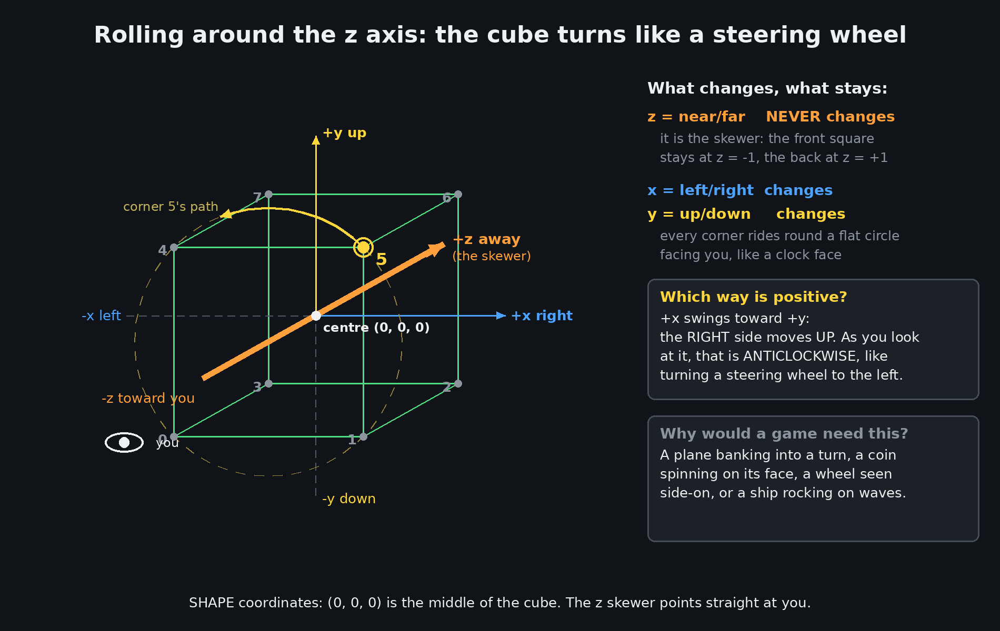
For rolling, +x swings toward +y: the right side moves up. As you look at it, that is anticlockwise, like steering left. So x is the swinger, y is the target and z is the skewer.
2.1 The two easy cases
This time we need no special view: the skewer points at your eye, so the screen itself is already the view along the skewer.
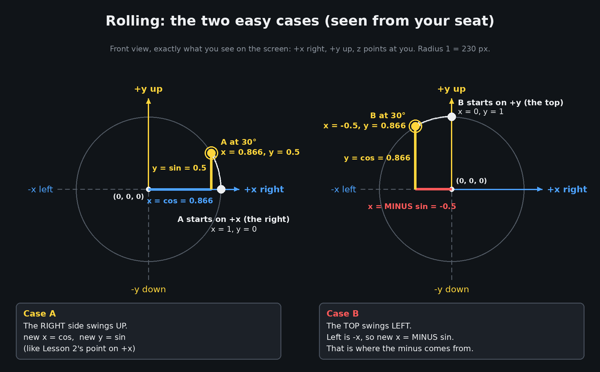
2.2 The roll rule
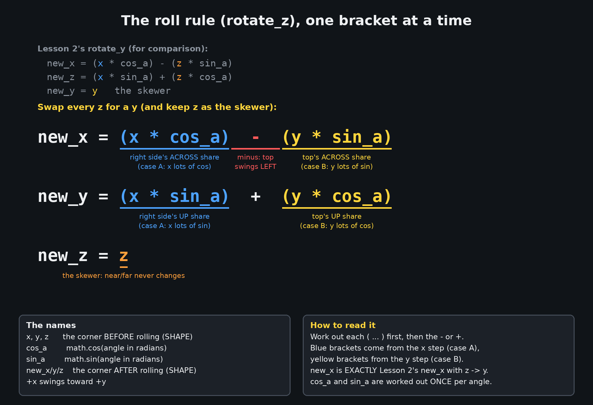
def rotate_z(point_3d, angle_degrees):
x, y, z = point_3d
angle_radians = math.radians(angle_degrees)
cos_a = math.cos(angle_radians)
sin_a = math.sin(angle_radians)
new_x = (x * cos_a) - (y * sin_a)
new_y = (x * sin_a) + (y * cos_a)
new_z = z # the skewer: near/far never changes
return (new_x, new_y, new_z)2.3 Worked example 1: corner 5, a quarter roll
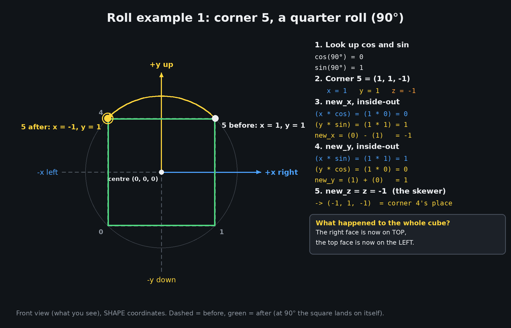
2.4 Worked example 2: corner 5, rolled 30°
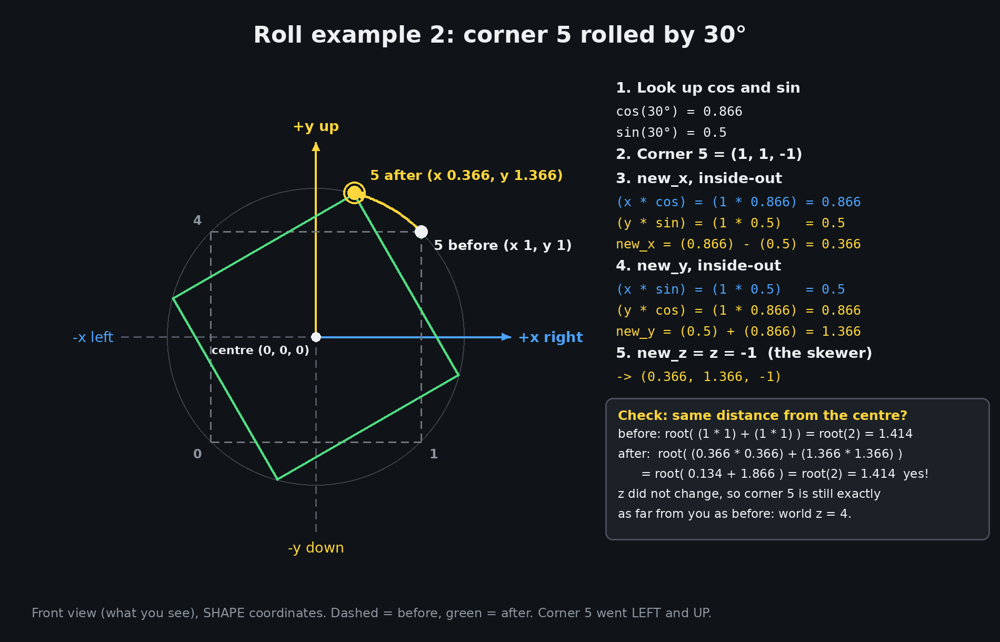
2.5 To the screen
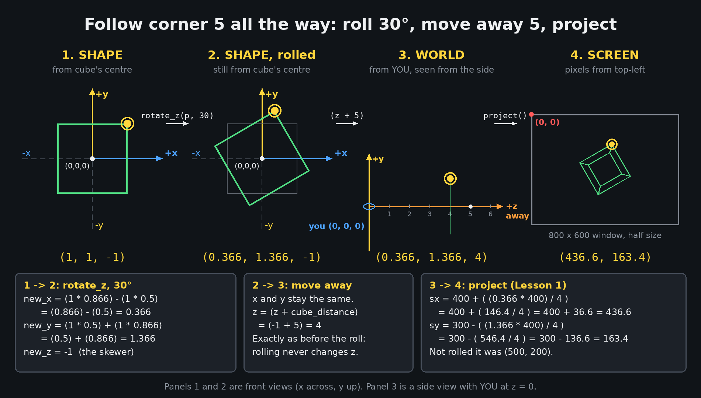
Rolling has one property the other two turns don't: because z never changes, every corner keeps its distance from you. Corner 5 always stays at world z = 4, so on the screen it travels round a perfect circle.
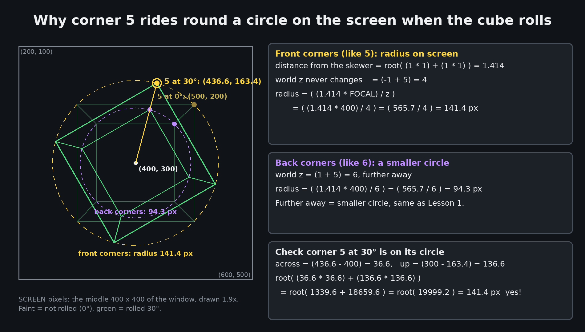
step2_roll_cube.py draws the yellow circle for you.Run step2_roll_cube.py. Hold LEFT to roll the cube anticlockwise and RIGHT to roll it back. Watch corner 5 stay on the grey circle.
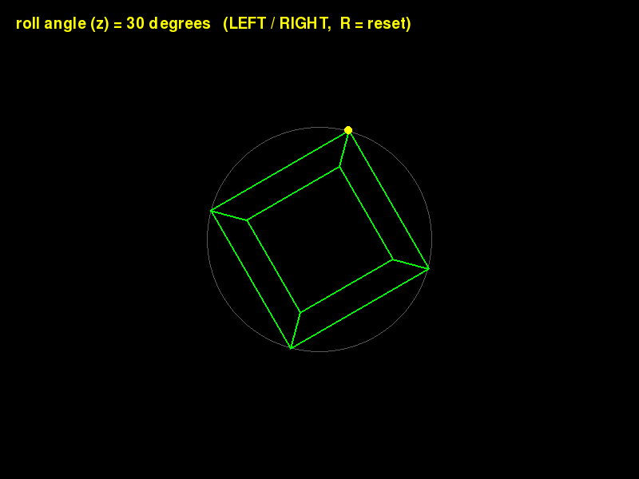
Full code: step2_roll_cube.py (about 170 lines)
# ======================================================================
# LESSON 2B - STEP 2: ROLL THE CUBE (turning around the z axis)
# ----------------------------------------------------------------------
# Goal: the LEFT / RIGHT arrows ROLL the cube around its z axis (the
# line through its middle that points straight at you), like turning
# a steering wheel.
#
# What is new since step 1:
#
# 1. angle_z_degrees - how far the cube has rolled
# 2. rotate_z(point, angle) - rolls ONE point around the z axis
# 3. a faint circle on the screen showing the path corner 5 travels
#
# THE BIG IDEA (again!):
# rotate_z is Lesson 2's rotate_y with different letters.
#
# Lesson 2, rotate_y: +x swings toward +z. y is the skewer.
# Today, rotate_z: +x swings toward +y. z is the skewer.
#
# So every "z" in the old rule becomes a "y", and z is left alone.
#
# No map this time: the z skewer points straight at you, so the screen
# itself is already the "map from the front".
#
# Controls: LEFT / RIGHT = roll the cube, R = reset the angle to 0
# Run: python step2_roll_cube.py
# ======================================================================
import math
import pygame
pygame.init()
WIDTH = 800
HEIGHT = 600
screen = pygame.display.set_mode((WIDTH, HEIGHT))
pygame.display.set_caption("Lesson 2B, step 2 - roll the cube")
clock = pygame.time.Clock()
font = pygame.font.SysFont(None, 28)
BLACK = (0, 0, 0)
GREEN = (0, 255, 0)
YELLOW = (255, 255, 0)
GREY = (90, 90, 90)
CENTRE_X = (WIDTH / 2) # (800 / 2) = 400
CENTRE_Y = (HEIGHT / 2) # (600 / 2) = 300
FOCAL = 400
# ---- The cube, in SHAPE coordinates (same as always) ------------------
cube_points = [
(-1, -1, -1), # 0 bottom-left-front
( 1, -1, -1), # 1 bottom-right-front
( 1, -1, 1), # 2 bottom-right-back
(-1, -1, 1), # 3 bottom-left-back
(-1, 1, -1), # 4 top-left-front
( 1, 1, -1), # 5 top-right-front
( 1, 1, 1), # 6 top-right-back
(-1, 1, 1), # 7 top-left-back
]
cube_edges = [
(0, 1), (1, 2), (2, 3), (3, 0), # bottom square
(4, 5), (5, 6), (6, 7), (7, 4), # top square
(0, 4), (1, 5), (2, 6), (3, 7), # upright edges
]
cube_distance = 5
# ---- NEW: how far the cube has rolled --------------------------------
angle_z_degrees = 0
TURN_STEP = 1 # 1 degree per frame -> 6 seconds for a full roll
def rotate_z(point_3d, angle_degrees):
"""Roll one (x, y, z) point around the z axis.
The point must be in SHAPE coordinates (from the shape's own centre).
A positive angle swings +x (the right side) toward +y (up):
as YOU look at it, that is ANTICLOCKWISE, like steering left.
"""
x, y, z = point_3d
angle_radians = math.radians(angle_degrees)
cos_a = math.cos(angle_radians)
sin_a = math.sin(angle_radians)
# Lesson 2's rule, with every z swapped for a y:
# rotate_y had new_x = (x * cos_a) - (z * sin_a)
# new_z = (x * sin_a) + (z * cos_a)
new_x = (x * cos_a) - (y * sin_a)
new_y = (x * sin_a) + (y * cos_a)
new_z = z # the skewer: near/far never changes
return (new_x, new_y, new_z)
def project(point_3d):
"""Turn one 3D WORLD point into a 2D SCREEN point (from Lesson 1)."""
x, y, z = point_3d
screen_x = CENTRE_X + ( (x * FOCAL) / z )
screen_y = CENTRE_Y - ( (y * FOCAL) / z )
return (screen_x, screen_y)
# ---- The path of corner 5 --------------------------------------------
# Rolling never changes z, so corner 5 stays at world z = (-1 + 5) = 4.
# Its distance from the skewer is root( (1 * 1) + (1 * 1) ) = 1.414.
# On screen that distance becomes ( (1.414 * FOCAL) / 4 ) = 141.4 px,
# so corner 5 always travels round a circle of radius 141 px.
PATH_RADIUS = ( (math.sqrt(2) * FOCAL) / (-1 + cube_distance) )
running = True
while running:
for event in pygame.event.get():
if event.type == pygame.QUIT:
running = False
keys = pygame.key.get_pressed()
# ---- NEW: LEFT / RIGHT change the roll angle ---------------------
# LEFT = a positive angle = anticlockwise, like steering left:
# the top of the cube leans to the LEFT.
if keys[pygame.K_LEFT]:
angle_z_degrees = (angle_z_degrees + TURN_STEP)
if keys[pygame.K_RIGHT]:
angle_z_degrees = (angle_z_degrees - TURN_STEP)
if keys[pygame.K_r]:
angle_z_degrees = 0
if angle_z_degrees >= 360:
angle_z_degrees = (angle_z_degrees - 360)
if angle_z_degrees < 0:
angle_z_degrees = (angle_z_degrees + 360)
screen.fill(BLACK)
# The faint circle that corner 5 rides round.
pygame.draw.circle(screen, GREY, (CENTRE_X, CENTRE_Y), PATH_RADIUS, 1)
# ---- rotate -> move away -> project, for all 8 corners -----------
screen_points = []
for p in cube_points:
turned = rotate_z(p, angle_z_degrees) # 1. ROLL (SHAPE)
x, y, z = turned
moved = (x, y, (z + cube_distance)) # 2. MOVE (WORLD)
screen_points.append(project(moved)) # 3. PROJECT (SCREEN)
for a, b in cube_edges:
pygame.draw.line(screen, GREEN, screen_points[a], screen_points[b], 2)
pygame.draw.circle(screen, YELLOW, screen_points[5], 5)
text = "roll angle (z) = " + str(angle_z_degrees) + " degrees (LEFT / RIGHT, R = reset)"
screen.blit(font.render(text, True, YELLOW), (20, 20))
pygame.display.flip()
clock.tick(60)
pygame.quit()
# ----------------------------------------------------------------------
# TRY THIS:
# * Roll to exactly 90 degrees. Corner 5 is now where which corner was?
# * Roll to 30 degrees. Is corner 5 at about (437, 163), as worked out
# in the lesson? Is it on the grey circle?
# * Look at the BACK square of the cube (the smaller one). Does it
# roll round a smaller circle? Why? (Hint: its z is 6, not 4.)
# * Change cube_distance to 8. What radius is the circle now?
# ( (1.414 * 400) / 7 ) = ?
# ----------------------------------------------------------------------Q7Roll corner 1, (1, -1, -1), by 90°. Where does it land?
Show answer
cos(90°) = 0, sin(90°) = 1
new_x = (1 * 0) - (-1 * 1) = (0) - (-1) = 1
new_y = (1 * 1) + (-1 * 0) = (1) + (0) = 1
new_z = -1Q8When the cube rolls, the front square on screen turns but never changes size. Why?
Show answer
project() always divides them by the same 4. Only tipping and turning move corners nearer or further.Q9Roll corner 5 by 45° (cos = sin = 0.707) and follow it to the screen.
Show answer
new_x = (1 * 0.707) - (1 * 0.707) = (0.707) - (0.707) = 0
new_y = (1 * 0.707) + (1 * 0.707) = (0.707) + (0.707) = 1.414
world z = (-1 + 5) = 4
sx = 400 + ( (0 * 400) / 4 ) = 400 + 0 = 400
sy = 300 - ( (1.414 * 400) / 4 ) = 300 - 141.4 = 158.6Q10Change cube_distance to 8. What is the radius of corner 5's circle now?
Show answer
world z = (-1 + 8) = 7
radius = ( (1.414 * 400) / 7 ) = ( 565.7 / 7 ) = 80.8 pxPart 3: All three at once 10 MIN
We now have three functions that all follow one pattern. Here they are side by side.
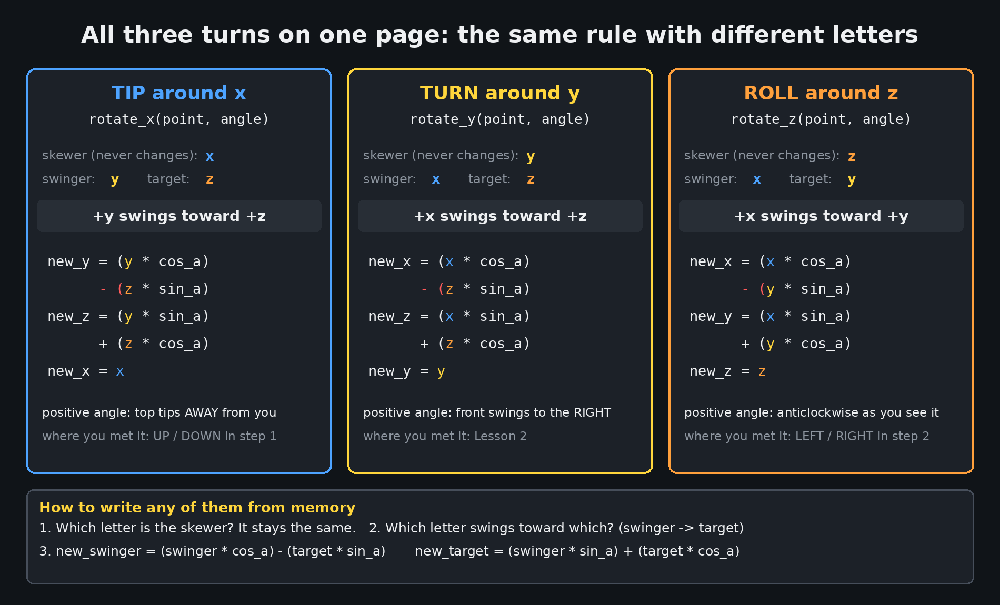
3.1 Why the order matters
To tumble the cube we do all three turns to every corner. That raises a question we never met in Lesson 2: which turn goes first? The answer changes the result. Here are two 90° turns done in both orders, with the front face painted pink so you can see where it ends up.
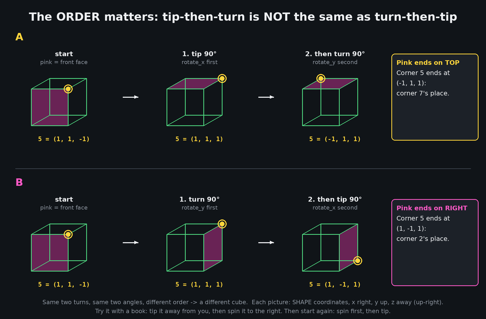
Why? Each turn works on the corner as the turn before left it. In row A the tip moves the pink face to the top, and a turn around the upright skewer can't move the top face anywhere else. In row B the turn moves the pink face to the right side, and a tip around the left-right skewer can't move the right face.
So we pick one order and always use it. We use tip, then turn, then roll (x, then y, then z), simply because it is alphabetical and easy to remember. Any order works as long as the program never changes it.
def rotate_all(point_3d):
"""Do all three turns, one after another, in SHAPE coordinates."""
p = rotate_x(point_3d, angle_x) # 1. tip
p = rotate_y(p, angle_y) # 2. turn (starts from the TIPPED corner)
p = rotate_z(p, angle_z) # 3. roll (starts from the TURNED corner)
return pEach line feeds its answer into the next, like passing a parcel along. Here is corner 5 going through all three, at 30° each.
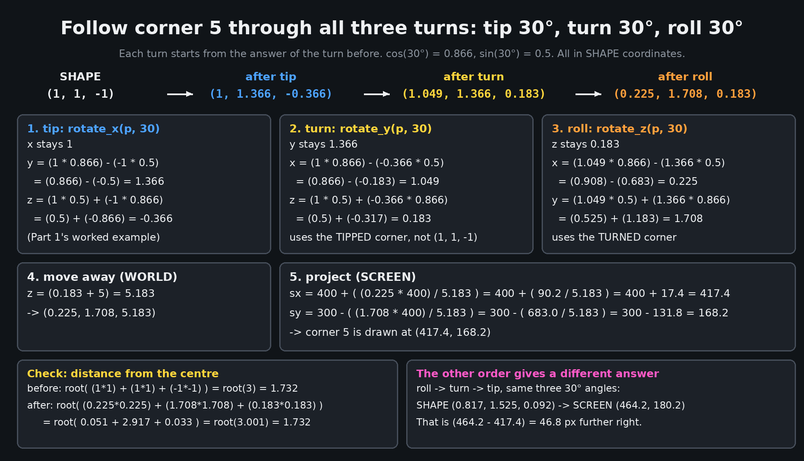
3.2 Three speeds
In Lesson 2 one SPEED was added to one angle every frame. Now each angle gets its own speed.
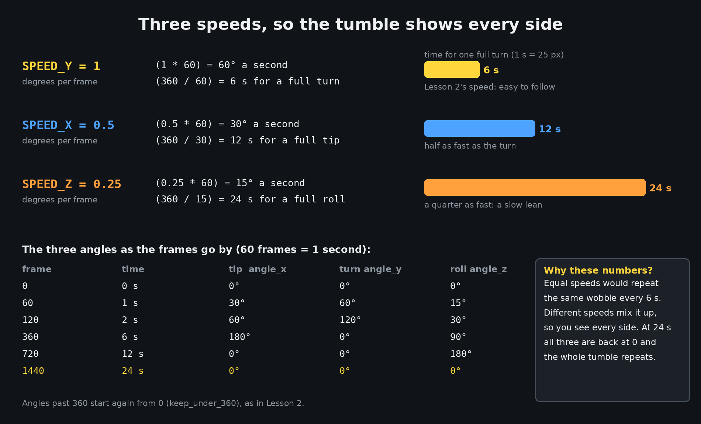
SPEED_X = 0.5 # tip: (0.5 * 60) = 30 deg/s -> 12 s a tip
SPEED_Y = 1 # turn: (1 * 60) = 60 deg/s -> 6 s a turn
SPEED_Z = 0.25 # roll: (0.25 * 60) = 15 deg/s -> 24 s a roll
# inside the main loop:
if not paused:
angle_x = keep_under_360( (angle_x + SPEED_X) )
angle_y = keep_under_360( (angle_y + SPEED_Y) )
angle_z = keep_under_360( (angle_z + SPEED_Z) )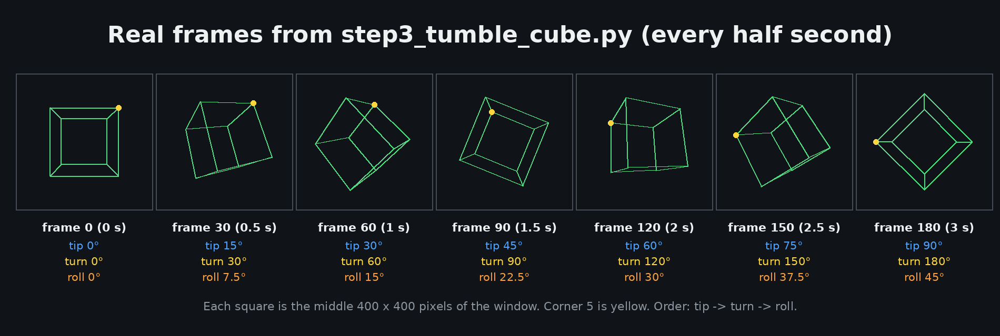
As in Lesson 2, every frame turns the original corners by the total angles so far. With three turns per corner per frame, rounding errors would pile up three times as fast if we kept turning already-turned corners.
Run step3_tumble_cube.py. SPACE pauses. While paused, press O to swap the order to roll, turn, tip: the angles on screen stay the same, but the cube jumps to a different pose. That is Part 3.1 happening live.
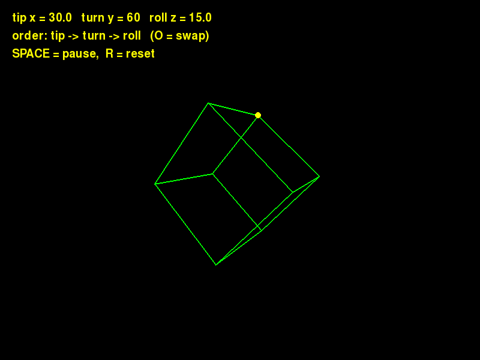
Full code: step3_tumble_cube.py (about 230 lines)
# ======================================================================
# LESSON 2B - STEP 3: THE TUMBLING CUBE (all three turns at once)
# ----------------------------------------------------------------------
# Goal: the cube tips, turns AND rolls by itself, each at its own speed,
# so it tumbles through the air and shows you every side.
#
# What is new since step 2:
#
# 1. THREE angles: angle_x, angle_y, angle_z (all in degrees)
# 2. THREE speeds: SPEED_X, SPEED_Y, SPEED_Z (degrees per frame)
# 3. rotate_all(point) - does the three turns ONE AFTER ANOTHER:
#
# tip (x) -> turn (y) -> roll (z)
#
# Each turn starts from the answer of the turn before.
#
# 4. Press O to swap the ORDER to roll (z) -> turn (y) -> tip (x).
# The cube JUMPS to a different position, even though the three
# angles are exactly the same. That is the lesson's "order matters".
#
# The full recipe for one corner, every frame:
#
# SHAPE corner -> tip -> turn -> roll -> add cube_distance -> project
# (all three turns in SHAPE coordinates) (WORLD) (SCREEN)
#
# Controls: SPACE = pause / unpause, O = swap the order,
# R = reset all three angles to 0
# Run: python step3_tumble_cube.py
# ======================================================================
import math
import pygame
pygame.init()
WIDTH = 800
HEIGHT = 600
screen = pygame.display.set_mode((WIDTH, HEIGHT))
pygame.display.set_caption("Lesson 2B, step 3 - the tumbling cube")
clock = pygame.time.Clock()
font = pygame.font.SysFont(None, 28)
BLACK = (0, 0, 0)
GREEN = (0, 255, 0)
YELLOW = (255, 255, 0)
CENTRE_X = (WIDTH / 2) # (800 / 2) = 400
CENTRE_Y = (HEIGHT / 2) # (600 / 2) = 300
FOCAL = 400
# ---- The cube, in SHAPE coordinates (same as always) ------------------
cube_points = [
(-1, -1, -1), # 0 bottom-left-front
( 1, -1, -1), # 1 bottom-right-front
( 1, -1, 1), # 2 bottom-right-back
(-1, -1, 1), # 3 bottom-left-back
(-1, 1, -1), # 4 top-left-front
( 1, 1, -1), # 5 top-right-front
( 1, 1, 1), # 6 top-right-back
(-1, 1, 1), # 7 top-left-back
]
cube_edges = [
(0, 1), (1, 2), (2, 3), (3, 0), # bottom square
(4, 5), (5, 6), (6, 7), (7, 4), # top square
(0, 4), (1, 5), (2, 6), (3, 7), # upright edges
]
# A turned corner can now reach root(3) = 1.732 in front of the centre
# (all three numbers of a corner can swing toward you at once), so the
# nearest a corner gets is (5 - 1.732) = 3.268 away. Safe.
cube_distance = 5
# ---- NEW: three angles and three speeds ------------------------------
angle_x = 0 # tip so far, degrees
angle_y = 0 # turn so far, degrees
angle_z = 0 # roll so far, degrees
# Degrees added EVERY FRAME (60 frames a second). Three DIFFERENT
# speeds, so the cube does not just repeat the same wobble:
# SPEED_Y = 1 -> (1 * 60) = 60 deg/s -> (360 / 60) = 6 s a turn
# SPEED_X = 0.5 -> (0.5 * 60) = 30 deg/s -> (360 / 30) = 12 s a tip
# SPEED_Z = 0.25 -> (0.25 * 60) = 15 deg/s -> (360 / 15) = 24 s a roll
# Turning stays at Lesson 2's speed; tipping is half that and rolling a
# quarter, so the tumble is slow enough to follow with your eyes.
SPEED_X = 0.5
SPEED_Y = 1
SPEED_Z = 0.25
paused = False
x_first = True # True: tip -> turn -> roll. False: roll -> turn -> tip.
# ---- The three turns. Same rule, three sets of letters ----------------
# rotate_x: +y swings toward +z (x is the skewer) = TIP
# rotate_y: +x swings toward +z (y is the skewer) = TURN (Lesson 2)
# rotate_z: +x swings toward +y (z is the skewer) = ROLL
def rotate_x(point_3d, angle_degrees):
"""TIP one SHAPE point around the x axis (top swings away)."""
x, y, z = point_3d
angle_radians = math.radians(angle_degrees)
cos_a = math.cos(angle_radians)
sin_a = math.sin(angle_radians)
new_x = x
new_y = (y * cos_a) - (z * sin_a)
new_z = (y * sin_a) + (z * cos_a)
return (new_x, new_y, new_z)
def rotate_y(point_3d, angle_degrees):
"""TURN one SHAPE point around the y axis (anticlockwise from above)."""
x, y, z = point_3d
angle_radians = math.radians(angle_degrees)
cos_a = math.cos(angle_radians)
sin_a = math.sin(angle_radians)
new_x = (x * cos_a) - (z * sin_a)
new_y = y
new_z = (x * sin_a) + (z * cos_a)
return (new_x, new_y, new_z)
def rotate_z(point_3d, angle_degrees):
"""ROLL one SHAPE point around the z axis (anticlockwise as you see it)."""
x, y, z = point_3d
angle_radians = math.radians(angle_degrees)
cos_a = math.cos(angle_radians)
sin_a = math.sin(angle_radians)
new_x = (x * cos_a) - (y * sin_a)
new_y = (x * sin_a) + (y * cos_a)
new_z = z
return (new_x, new_y, new_z)
def rotate_all(point_3d):
"""Do all three turns, one after another, in SHAPE coordinates.
Each line feeds its answer into the next line, like passing a
parcel along: the turn only ever sees the corner as the previous
turn left it.
"""
if x_first:
p = rotate_x(point_3d, angle_x) # 1. tip
p = rotate_y(p, angle_y) # 2. turn
p = rotate_z(p, angle_z) # 3. roll
else:
p = rotate_z(point_3d, angle_z) # 1. roll
p = rotate_y(p, angle_y) # 2. turn
p = rotate_x(p, angle_x) # 3. tip
return p
def project(point_3d):
"""Turn one 3D WORLD point into a 2D SCREEN point (from Lesson 1)."""
x, y, z = point_3d
screen_x = CENTRE_X + ( (x * FOCAL) / z )
screen_y = CENTRE_Y - ( (y * FOCAL) / z )
return (screen_x, screen_y)
def keep_under_360(angle):
"""360 degrees is the same as 0, so start again after a full turn."""
if angle >= 360:
angle = (angle - 360)
return angle
running = True
while running:
for event in pygame.event.get():
if event.type == pygame.QUIT:
running = False
if event.type == pygame.KEYDOWN:
if event.key == pygame.K_SPACE:
paused = not paused # one press = one flip
if event.key == pygame.K_o:
x_first = not x_first # swap the order
if event.key == pygame.K_r:
angle_x = 0
angle_y = 0
angle_z = 0
# ---- NEW: all three angles grow every frame ----------------------
if not paused:
angle_x = keep_under_360( (angle_x + SPEED_X) )
angle_y = keep_under_360( (angle_y + SPEED_Y) )
angle_z = keep_under_360( (angle_z + SPEED_Z) )
screen.fill(BLACK)
# ---- turn x3 -> move away -> project, for all 8 corners ----------
# As always, we turn the ORIGINAL cube_points by the TOTAL angles.
screen_points = []
for p in cube_points:
turned = rotate_all(p) # SHAPE, turned 3 times
x, y, z = turned
moved = (x, y, (z + cube_distance)) # WORLD
screen_points.append(project(moved)) # SCREEN
for a, b in cube_edges:
pygame.draw.line(screen, GREEN, screen_points[a], screen_points[b], 2)
pygame.draw.circle(screen, YELLOW, screen_points[5], 5)
text = ("tip x = " + str(round(angle_x, 1)) +
" turn y = " + str(round(angle_y, 1)) +
" roll z = " + str(round(angle_z, 1)))
screen.blit(font.render(text, True, YELLOW), (20, 20))
if x_first:
order_text = "order: tip -> turn -> roll (O = swap)"
else:
order_text = "order: roll -> turn -> tip (O = swap)"
screen.blit(font.render(order_text, True, YELLOW), (20, 50))
screen.blit(font.render("SPACE = pause, R = reset", True, YELLOW), (20, 80))
pygame.display.flip()
clock.tick(60)
pygame.quit()
# ----------------------------------------------------------------------
# TRY THIS:
# * Pause (SPACE), then press O a few times. The angles do not change,
# but the cube jumps. Why? (Lesson Part 3.)
# * Set SPEED_X = 0 and SPEED_Z = 0. You should get Lesson 2's spin back.
# * Set all three speeds to 1. Does the tumble look more or less
# interesting than with three different speeds?
# * Write a 4th order, e.g. turn -> tip -> roll, and try it.
# ----------------------------------------------------------------------Q11Only one angle is not zero: tip 30°, turn 0°, roll 0°. Does the order of the three turns matter now?
Show answer
new_x = (x * 1) - (z * 0) = x and so on: it changes nothing. Order only matters when two or more of the turns actually turn.Q12Check row B's last step of the order diagram (Fig 2B.3.2b) by hand: after the turn, corner 5 is at (1, 1, 1). Tip it by 90°.
Show answer
cos(90°) = 0, sin(90°) = 1
new_x = 1
new_y = (1 * 0) - (1 * 1) = (0) - (1) = -1
new_z = (1 * 1) + (1 * 0) = (1) + (0) = 1Q13Set SPEED_X = 1. How many seconds does one full tip take now?
Show answer
degrees per second = (1 * 60) = 60
seconds per tip = (360 / 60) = 6Q14With all three turns, how close can a corner get to you at cube_distance = 5?
Show answer
project() never divides by something tiny.Wrap up 2 MIN
1. A cube has three skewers: tip around x, turn around y, roll around z. The skewer's letter never changes.
2. Describe any turn as "which letter swings toward which": tip +y toward +z, turn +x toward +z, roll +x toward +y.
3. One pattern for all three: new_swinger = (swinger * cos_a) - (target * sin_a) and new_target = (swinger * sin_a) + (target * cos_a).
4. Rolling never changes z, so a rolling corner rides a circle on screen.
5. Several turns are done one after another, each starting from the last answer, and the order changes the result. We always use tip, turn, roll.
6. Rotate (SHAPE), then move (WORLD), then project (SCREEN), exactly as before.
Q15Final check: list, in order, everything that happens to one corner of the cube in one frame of step3_tumble_cube.py.
Show answer
rotate_x. 3. The tipped corner is turned with rotate_y. 4. The turned corner is rolled with rotate_z. 5. cube_distance is added to its z, giving WORLD coordinates. 6. project() turns it into SCREEN pixels. 7. The edges are drawn between the screen points.Practice before Lesson 3
- Tumble the pyramid you made after Lesson 1 instead of the cube. Only
cube_pointsandcube_edgeschange. - Add keys to step 3 that change one speed while it runs, for example T and G for SPEED_X up and down.
- Write a fourth order, turn then tip then roll, and add it to the O key so it cycles through three orders.
- Draw two cubes side by side,
((x - 3), y, (z + cube_distance))and((x + 3), y, (z + cube_distance)), one tumbling in each order.
Next time: Lesson 3, solid faces
So far the cube is made of wire: 12 lines with nothing between them, so you can see the back edges straight through the front. In Lesson 3 we fill its six sides with colour, paint them in the right order, skip the ones that face away from you, and light them with a lamp. Walking around the cube comes after that, in Lesson 4.
Files
Download the code for this lesson (right-click a file and choose Save link as):
code/step1_tip_cube.py: tip the cube with UP and DOWN, with a map from the sidecode/step2_roll_cube.py: roll the cube with LEFT and RIGHT, with corner 5's circlecode/step3_tumble_cube.py: the cube tumbles by itself; O swaps the orderimages/: every diagram on this page as a PNG- Figure index: every figure and table in the course, with its number. Numbers read
Fig lesson.part.figure, plus a letter for one panel of a picture (for exampleFig 3.4.2b).